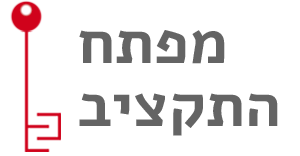

يسر ورشة عمل للمعرفة الجماهيرية وجمعية ويكميديا اسرائيل دعوتكم لورشات تعمق ضمن سلسلة
Where is My Data لنمارس ونتدرب عمليا العمل مع مفتاح الميزانية وكي نتعلم كيفية تحميل مواد للويكبيديا.
متى و اين
الورشات ستعقد في 3 أماكن
تل ابيب
13.3
مفتاح الميزانية
מטח - קלאוזנר 16
10:00-14:00
12.4
تحرير في الويكبيديا
ويكيميديا - קרליבך 7
10:00-14:00
القدس
10.3
مفتاح الميزانية
Q5 - שבטי ישראל 22
9:00-13:00
حيفا
20.3
مفتاح الميزانية
جامعة حيفا
10:00-14:00
شهر نيسان (4)
تحرير في الويكبيديا
(وسنعلمكم بالتاريخ المعين لاحقا)
جامعة حيفا
الورشات
مفتاح الميزانية
سنتعلم كيفية الخوض والتنقل في ميزانية الدولة, لنفهم تقسيمات الميزانيات, لمتابعة التحويلات في اللجنة المالية كي نرى كيف تتغير الميزانية خلال السنة. سنبحث عن دعائم واتصالات للاعفاءات من مناقصة الحكومة مع اطراف خاصة وجماهيرية لنفهم لأين تذهب الأموال في الواقع. في النهاية, سنتعلم كيفية الاستعانة بأدوات عمل عملية يومية في مؤسساتنا الاجتماعية.
تحرير في الويكبيديا
سيتلقى المشتركون تعليمات حول تحميل مواد جاهزة لمساحة المعلومات. كتحضير ضروري للورشة, عليكم التسجيل للويكبيديا واختيار مادة للكتابة او التوسع في مختلف المواد الناقصة في مواضيع تهمكم. (بعد الاختيار سيطلب منكم تمرير المواد لفحص قابليتها للتحرير). بعد هذا, سيتوجب عليكم الدخول الى موقع לומדת העריכה האינטראקטיבית للتعلم الذاتي حيث ستتعلمون وتمارسون الكتابة في الويكبيديا, وايضا انشاء قيمة جديدة وتوسيع قيم او مواد قائمة. خلال الورشة العملية, سنساعدكم في تحميل مواد جديدة كتبت لمساحة او فضاء الويكبيديا.
* جميع ورشات العمل ستكون في صفوف محوسبة ونستطيع أن نستعمل حواسيب الصف أو بإمكانكم احضار حواسيبكم الخاصة.
من نحن
ورشة العمل للمعرفة العامة هي جمعية تعمل على تعزيز الشفافية والمساءلة الحكومية وتشجيع الحوار المدني القائم على المعلومات، من خلال تطوير المواقع والتطبيقات لفتح وإمكانية الوصول إلى المعلومات العامة. أنشطة الجمعية مبنية على أساس عمل متطوعين من مجال تطوير البرمجيات، الاقتصاد، السياسة العامة، الصحافة، التصميم الجرافيك والمزيد الذين يقودوا أكثر من 15 مشروعاً مختلفاً للبيانات المفتوحة. القائمة الكاملة للمشاريع: hasadna.org.il/projects.
تشارك جمعية ويكيميديا إسرائيل في جمع، خلق وتقديم المحتوى المجاني والشراكات. تدعم الجمعية المجتمع المحلي من محرري ويكيبيديا ومشاريعها الشقيقة مثل ويكيميلون، ويكوشيتوف وغيرها، ولها مجموعة من الشراكات مع المؤسسات الثقافية، التعليم العالي، ونظام التعليم لتشجيع النشر والوصول إلى المعرفة والمعلومات للجمهور. نحن نعتقد أن كل شخص يحق له أن يستهلك ويساهم في المحتوى والمعرفة بحرية، دون تكلفة، ونحن سعداء بتعزيز تقدم التعليم والمعرفة مجاناً في إسرائيل والعالم.
للتسجيل
עיצוב ופיתוח: יונתן שמיר